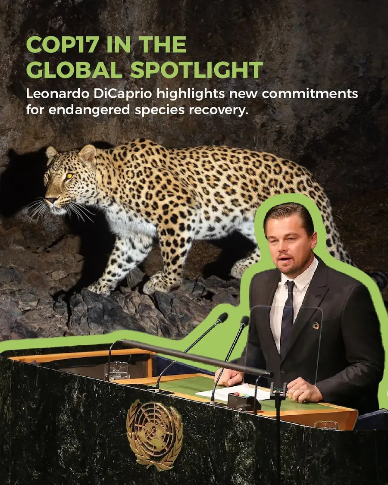

Conservation news · Species recovery
COP17 Species Recovery Initiatives: The Role of Veterinary Care
International species recovery commitments and the role of timely veterinary care.
- Species recovery
- Veterinary care
- Research collaboration

In a LinkedIn publication dated 17 October 2026, COP17 Armenia highlighted two initiatives for threatened species recovery, drawing attention to their support from Leonardo DiCaprio.
According to the announcement, 17 countries, led by Armenia and Colombia, have joined the Coalition of Action to Recover Endangered Species (CARES) to accelerate efforts to prevent extinctions and achieve measurable species recovery.
Separately, nine philanthropic funders and organisations, including Re:wild, have formed the Species Recovery Alliance, committing and aligning more than US$500 million over five years to support threatened species recovery worldwide.
From the BHOC Species & Biodiversity Protection Initiative
We welcome the international commitment to help threatened species recover.
We believe timely veterinary care should be part of practical conservation planning. Alongside protecting habitats and rebuilding populations, we must also strengthen the ability to help individual animals survive critical illness and injury.
Our initiative connects veterinary oxygen-delivery research with wildlife rescue, emergency care and rehabilitation. We want to explore how this science may contribute to the work of veterinary and conservation teams, with clearly defined research questions and measurable outcomes.
We invite wildlife veterinarians, rescue centres and conservation organisations to discuss research collaboration and potential pilot projects.
Different species. The same biological need: oxygen.